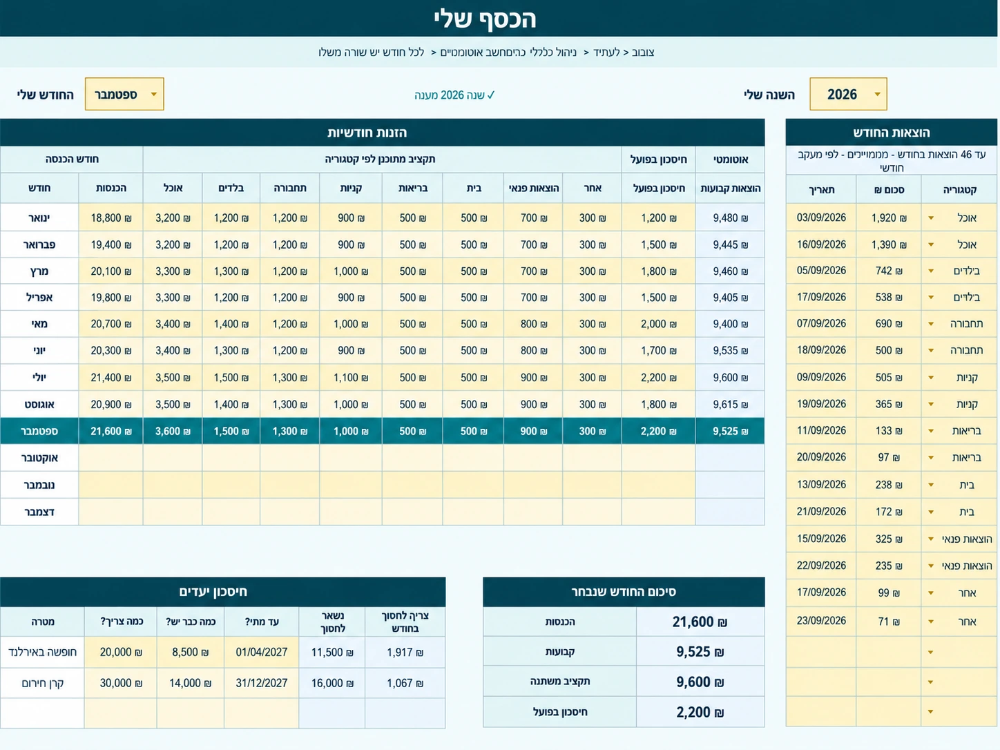
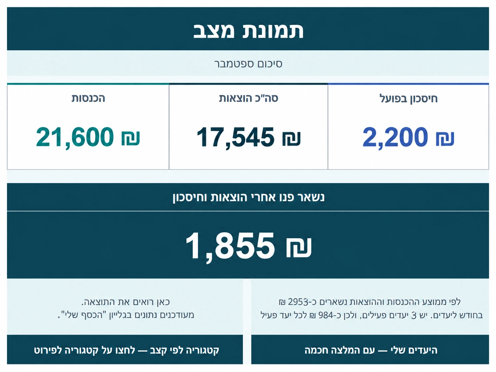
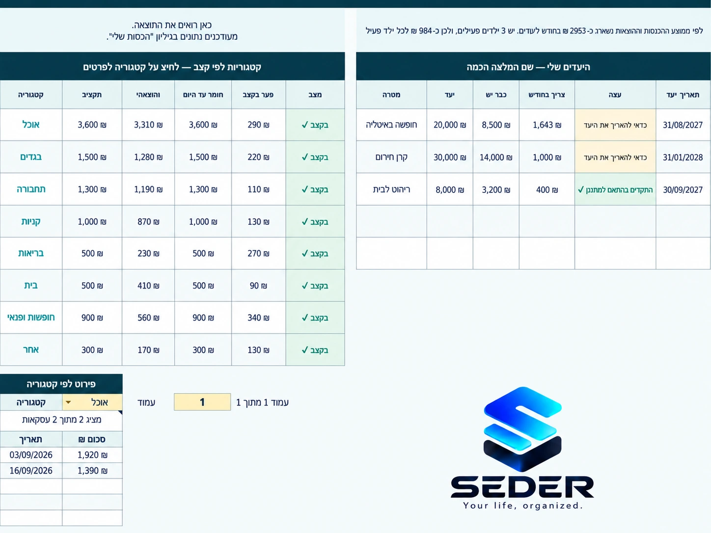
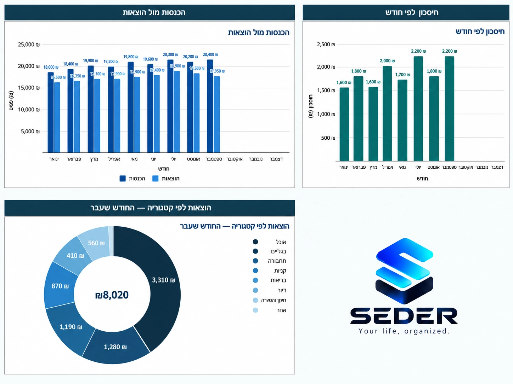

פשוט
לא צריך ידע ב-Excel.
מההזנה היומית ועד לתמונה הגדולה — הנה כל מה שיש בתוך SEDER.
הכנסות, תקציב והוצאות במקום אחד.

כמה נכנס, כמה יצא, כמה חסכתם וכמה נשאר.

רואים האם אתם בקצב ומה צריך לשנות כדי להגיע ליעד.

החודשים מתחברים למגמות ברורות לאורך זמן.

לא צריך ידע ב-Excel.
הכול במקום אחד.
חישובים וגרפים מתעדכנים לבד.